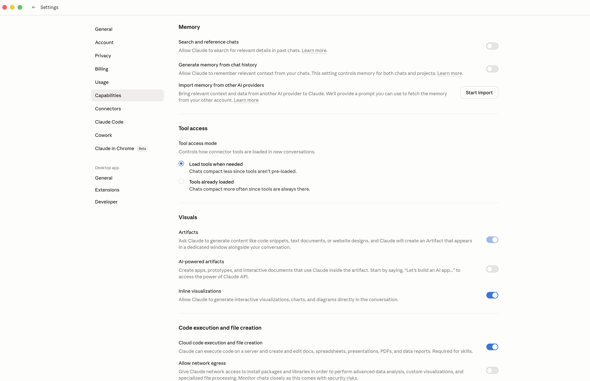
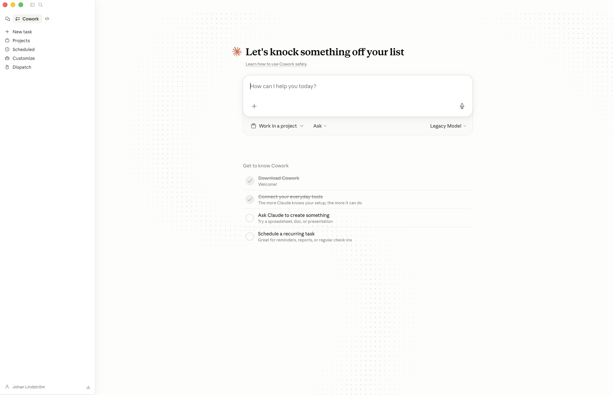

The Educator's Guide to Claude
A practical handbook for teachers and school leaders — from your first prompt to a school-wide AI strategy.
Download the free PDF →Three principles that shape this guide
Before the how, a word on the why. Anyone can list Claude's features. Few guides take a position on what the tool is actually for — and what it is not for. This one does. Three principles sit behind every recommendation in the pages that follow.
The teacher is the expert
Claude is a tool. You are the teacher. The tool does not set the learning goals. It does not know your students. It does not understand the pedagogical choices you have made and why. You do. Every output Claude produces passes through your professional judgment before it reaches a classroom. This is not a nice idea — it is the working rule.
Your knowledge, your experience, your discernment: these are what make any AI output actually useful. If you understand differentiation deeply, Claude becomes a force multiplier. If you don't, no AI will fill the gap. The tool amplifies what you already bring; it does not replace it.
Do the fundamentals better
The temptation with new technology is always to do new things — escape rooms, virtual reality excursions, gamified everything. Most of it is noise. The real opportunity is quieter. It is to do the evidence-based fundamentals more often and more consistently than you currently can.
Retrieval practice. Vocabulary work. Text differentiation. Sentence stems. Worked examples. Formative feedback. These are the practices the research keeps pointing to, and the practices teachers have always said they would use more often — if they had the time. Claude gives you the time. What used to take ninety minutes of preparation now takes five. That is not flashy. It is transformative in the only sense that matters: students learn more.
After nearly three decades in classrooms and leadership roles, I have watched a lot of tools arrive with the promise of changing education. The ones that stayed were the ones that let teachers do more of what they already knew worked. The ones that vanished were the ones that asked teachers to become something else. Claude is one of the best AI tools I have seen that clearly belongs in the first group — if you use it well.
— JLInclude every student
Every classroom has students on the margins. The EAL student who needs key vocabulary pre-taught to access the text everyone else is reading. The student with a learning difficulty who needs the same content at a simplified reading age. The advanced student who is coasting because the work is not stretching them. Meeting all of these students, every lesson, has always been the right thing to do — and has always been too time-consuming to do consistently.
Claude lowers that time cost to the point where it becomes realistic. Differentiated texts in five minutes. Translated key terms. Scaffolded instructions. Audio versions of written tasks. This is not about doing more. It is about doing what matters, for the students who need it most, at a cadence the research has recommended for decades.
Claude can help you create resources faster. It cannot replace the relational work of teaching. Do not let the efficiency of AI trick you into spending less time with students. The time AI saves is for them — not for more admin.
Understanding the Claude ecosystem
Claude is not a single product. Most teachers will spend most of their time in one place — chat — but it is worth knowing what the other surfaces are, because they serve different purposes and some require a paid plan.
Four surfaces, one model family. Most of your work initially happens in Chat.
Chat — the conversational interface
Chat is Claude as most people know it: type a prompt, get a response, iterate. It runs at claude.ai in a browser, in the Claude Desktop app on macOS and Windows, and in the mobile apps. The free tier gives you access to Claude Sonnet, file uploads, web search, memory across conversations, and the ability to produce downloadable documents. This is where ninety per cent of teachers will do ninety per cent of their work.
Cowork — agentic mode inside Claude Desktop (paid)
Cowork is newer, and it is worth learning about because it changes what Claude can do for you in a single request. Anthropic describes it this way: "Claude Cowork uses the same agentic architecture that powers Claude Code, now accessible within Claude Desktop and without opening the terminal. Instead of responding to prompts one at a time, Claude can take on complex, multi-step tasks and execute them on your behalf." Cowork sits as a tab inside Claude Desktop on paid plans. You will meet it properly in Part 3.
Claude Code — the developer tool (paid, technical)
Claude Code is a command-line tool for developers and IT-curious staff. It lets Claude read and write files on your computer and run programs. For most teachers this is not a daily tool, but it is where Claude becomes most powerful — and where your school's tech staff or curriculum lead may want to spend time. Part 3 includes a short glimpse so you know what it is.
Mobile — Claude on the go
The iOS and Android apps give you the same Chat on a smaller screen. Voice input is particularly useful: a teacher I work with drafts her weekly parent communications during her commute by dictating, then edits on the laptop at home. Mobile is not where you build; it is where you capture and review.
What you get on each plan
| Plan | Price | Best for | Includes |
|---|---|---|---|
| Free | $0 | Trying it; light personal use | Chat (Sonnet), web search, memory, file uploads, file creation, mobile apps |
| Pro | ~$20 / mo | A teacher's daily workhorse | Everything in Free, plus access to Opus, Cowork, larger usage limits, unlimited Projects, extended thinking |
| Max | $100+ / mo | Power users, departments | Everything in Pro, plus 5–20× usage, higher output limits, early access to new features |
Pricing accurate as of April 2026. Check claude.ai for current pricing. These are Anthropic's individual plans; team and enterprise plans differ.
On individual plans, your conversations may be used for model training by default. Open Settings → Privacy and review the option. If you are entering anything about students — even de-identified — review your school's AI policy before proceeding, and turn training off if you are unsure.
Getting Started
If you have never opened Claude before, start here. By the end of this part you will have an account, you will know how to write a prompt that does not waste your time, and you will have five concrete things you can use this week.
Creating your account
Go to claude.ai and sign up. You can sign in with Google or Apple, or create an account with any email address. To decide whether Claude is a useful tool for you, start with a free personal account — just don't upload sensitive data. If you conclude that your school should have Claude accounts, there are several steps to work through before you are up and running.
The free tier is genuinely useful. You get Claude Sonnet, memory across conversations, web search, file uploads and file creation, and the mobile apps. Most of this guide works on the free tier. Start there. Upgrade when you find yourself running out of usage in the middle of a productive session — not before.
Web (claude.ai)
Fastest start. No install, no permissions, no IT ticket. Open the browser, sign in, start typing.
Desktop app (macOS and Windows)
Recommended for daily use. The desktop app runs outside your browser, which means you are not fighting thirty open tabs when you want to think. It also happens to be where Cowork lives on paid plans.
Mobile (iOS and Android)
Install both. Voice input is the hidden productivity feature. A ten-minute walk between classrooms is long enough to dictate a draft parent email, a feedback summary, or a rough lesson outline. You edit the text later, on a proper keyboard.
Your first prompt — the RTF anatomy
Most prompts fail not because the model is bad, but because the prompt is too vague. A useful prompt has three parts: Role, Task, Format. Three letters: R, T, F.
R — Role
Tell Claude who to be. The more specific the role, the more grounded the output. "A primary teacher" is weaker than "an experienced Year 4 literacy teacher in a state school with a wide range of reading ages".
T — Task
State exactly what you want done. Not "help me with a quiz" — that leaves too much to guess. Instead: "Create a ten-minute retrieval practice quiz on persuasive techniques covered in the past three lessons."
F — Format
Specify the shape of the answer. Number of questions, mix of question types, word count, heading structure, whether you want an answer key. Format is where most first drafts go wrong and most fixes get made — so say it up front.
Put the three together and you have a prompt that works on the first try and gets better on the second. Iteration is part of the skill: Claude's first output is a draft, not a deliverable. Read it, tell Claude what to change, and run again.
Open Claude. Write one prompt using the RTF anatomy — Role, Task, Format — for a real task on your desk this week. When the first draft arrives, ask for two changes and run it again. Then ask for one more. Notice what changes between draft one and draft three. That is your skill curve in action.
Bad → Better → Best
Same topic, three drafts of the same prompt. Each draft gets more precise about what Claude needs to know. The output quality climbs with the specificity of the prompt — not with the length of it.
Explain the water cycle.
Explain the water cycle for Year 6 students. Make it easy to understand.
Act as an experienced Year 6 Science teacher. Task: Write a one-page explanation of the water cycle suitable for a mixed-ability Year 6 class. Include the four core stages and one real-world example for each. Format: - 250–300 words total - Plain language, short sentences (≤15 words where possible) - One vocabulary box with five key terms and child-friendly definitions - End with three retrieval questions (two recall, one application) Pitch: students reading at Year 5 to Year 7 level.
The Best prompt is not longer for its own sake. Every word earns a place by reducing what Claude has to guess.
Five quick wins for this week
Don't try to use Claude for everything at once. Get good at one task, get it into your routine, then add the next.
1 · Differentiate a reading passage at three levels
Paste a passage you are planning to use. Ask Claude to produce three versions of it at reading ages two years below, at-level, and two years above, preserving the core ideas and keeping the shared vocabulary intact. The whole job takes five minutes instead of forty, and every student in your room reads about the same subject on the same day.
Extra example: a Year 7 geography teacher I work with uses this every week on UK newspaper articles about current events. One article becomes three versions for three reading groups within fifteen minutes, and current affairs finally enter the classroom on time rather than a term late.
2 · Build a retrieval practice quiz
Retrieval practice works. What stops most teachers from running it every lesson is the time cost of generating fresh questions. Claude removes that cost. Give it the topic, the year level, the mix of question types, and the number of questions. Ask for an answer key at the end. You will have a usable draft inside two minutes.
Extra example: a head of department I coached uses this to produce a five-question low-stakes quiz for the opening five minutes of every lesson across her department. The quizzes are consistent, draw from prior content, and take her ten minutes a week to generate for an entire team.
3 · Draft a parent communication
You know what you want to say. Writing it well, professionally, and without falling into the six awkward sentences you have used before is what takes time. Give Claude the context — what happened, what you want the parent to know, what tone you want to strike — and let it produce a first draft. Edit. Send.
Extra example: use Claude to draft a sensitive email about a student's behaviour, then ask for the same message in two alternative tones (firmer, warmer). The three versions give you calibration before you commit to the one you will send.
4 · Summarise a long policy document
Teachers are drowning in policy documents they do not have time to read properly. Upload the PDF and ask Claude for the three things you actually need to know, the parts that affect you directly, and any deadlines buried in the document.
Extra example: when your district issues an updated assessment policy, upload the new version and the previous version. Ask Claude for a side-by-side of what has changed. You now have a comparison your colleagues do not.
5 · Create a lesson starter
The first five minutes of a lesson matter more than most of the next fifty. Ask Claude for three starter options in different formats — a vocabulary warm-up, a sentence-completion task, and a think-pair-share prompt — and pick whichever fits your class.
Extra example: a primary teacher I work with generates her starters a term at a time, in bulk. One evening produces twelve weeks of starters across her subject rotation. She then edits and files them, freeing up her Sunday evenings for the rest of the term.
Pick one of the five. Do it for a real lesson this week. The other four will still be there next week. Mastery happens through repetition on one task, not scatter across all five at once.
Part 1 — Before you move on
- I have created a Claude account and signed in at claude.ai
- I know which surface (Chat, Cowork, Code, Mobile) is which, and which require a paid plan
- I have written at least three prompts using the RTF anatomy — Role, Task, Format
- I have iterated on at least one prompt — improving it through two rounds of feedback — for a real task
- I have completed at least one of the five quick wins for a lesson or task this week
- I have decided which categories of data are acceptable to share with Claude, and which are not
Working Smarter
Once you find yourself returning to Claude for the same kind of task week after week, it is time to stop starting from scratch. This part shows you how to make Claude a persistent assistant — one that already knows your subject, your school, and how you like to write.
Projects — your persistent teaching assistant
A Project is a workspace inside Claude. You create one, give it a name, upload reference files, and write a set of custom instructions. Every conversation you start inside that Project draws on those files and follows those instructions — without you having to paste them in again.
This is where Claude stops being generically helpful and starts being genuinely yours. The same prompt that produced a competent-but-bland worksheet outside a Project produces a worksheet that fits your students when it is run inside one. The difference is not about Claude working harder; it is about Claude working with more context.

What to upload to your first Project
Pick your main teaching area — the subject or year level you spend most of your time on. Create a Project for it. Upload five things that together describe your working context:
- Your curriculum or syllabus for that subject and year
- Your scope and sequence or term planner, if you have one
- Your school's style guide or communications guide, if one exists
- An assessment rubric you commonly use
- Three de-identified student work samples at different performance levels
Before uploading anything to Claude, decide which categories of data are acceptable to share — and which are not.
The instructions that make the difference
Under the Project's settings, add a custom instruction that describes who Claude is for you. Something like:
"You are an experienced Year 8 English teacher in a mixed-ability state school in England. Outputs should be classroom-ready, follow the uploaded style guide, and never produce more than I asked for. If a task involves student data, ask me to confirm the data has been de-identified before proceeding. Use British English spelling."
Spend twenty minutes setting up your first Project. Upload three documents. Write the instructions. Then run yesterday's worst prompt inside the Project and notice the difference. That twenty minutes is the highest-leverage time you will spend on AI all year.
Artifacts — turn chats into downloadable documents
When you ask Claude to create something — a worksheet, a rubric, a quiz, a letter home, a vocabulary handout — it can produce a downloadable file directly in the conversation. These appear beside the chat as artifacts. You download them, edit them, and iterate without ever leaving the browser.
Common output formats: Word documents, PDFs, PowerPoint decks, Excel spreadsheets with formulas, plain text, HTML, Markdown. For most classroom materials, Word or PDF is what you want.
Files — let Claude read your curriculum
Claude handles long documents exceptionally well. You can upload PDFs, Word documents, spreadsheets, images, and slides. File uploads are where Claude earns its most underrated keep: reading the documents you never have time to read yourself.
Three high-value uses for teachers and school leaders:
- Summarise a long policy document. Upload it, ask for the three things that actually affect you, any deadlines buried in the text, and any changes from a previous version you also upload.
- Map an existing unit against a curriculum document. Upload your unit plan and the curriculum standards and ask Claude to identify gaps, overlaps, and opportunities.
- Analyse de-identified student work for feedback patterns. Upload eight to ten anonymised responses and ask Claude to identify recurring strengths and recurring misconceptions, then suggest the three highest-leverage teaching moves for the next lesson.
Before uploading anything to Claude, decide which categories of data are acceptable to share — and which are not. Public curriculum documents, policy PDFs, your own lesson notes and slides are usually fine. Student names, grades, behavioural records, health information, parent contact details, anything that identifies a young person — never. De-identify everything. Replace names with roles ("Student A", "Student B"). Generalise dates and locations. If you are unsure whether a document is safe to upload, treat it as if it is not, and ask your school's data protection officer before you proceed.
Styles & Memory — make Claude sound like you
Styles
Styles are voice presets. You save one called "Parent communication — warm, clear, professional, no jargon" and another called "Staff meeting brief — concise, action-oriented, bullet-led". When you start a relevant task, you pick the Style from a drop-down, and the output arrives already in the voice you want. Most teachers end up with three or four Styles. That is usually enough to cover eighty per cent of their writing tasks.
Memory
Claude can remember things about you across conversations — your role, the year you teach, your school context, the way you like outputs formatted. You enable it once, and it works in the background from then on. Open Settings, find the Memory section, and turn it on. In your first few conversations, tell Claude about yourself in plain sentences. You can review every memory it has saved — and delete any of them — in Settings at any time.

A Project is the smallest unit of compounding value in Claude. Set it up once; benefit from it every conversation.
Five classroom workflows that compound
Single prompts produce single outputs. The real leverage is in workflows — prompt patterns you reuse week after week, embedded inside a Project, where the files and instructions do half the work for you.
1 · Weekly lesson planning from learning objectives
Start from your weekly objective, your year level, and the time you have. Ask Claude for a lesson skeleton: a five-minute starter, a main task with differentiation at three levels, an exit ticket. Five minutes of work replaces what was previously a forty-minute planning block.
2 · Marking feedback patterns from de-identified work
Upload eight to ten de-identified responses to the same task. Ask Claude to identify the three recurring strengths, the three recurring misconceptions, and the single highest-leverage thing to teach next. What comes back is usually what you would have concluded yourself, but faster and with the comfort of a second set of eyes.
3 · Differentiated instruction generator
Any teaching resource — a reading passage, a worksheet, a set of instructions — can be differentiated in three directions: simplified, extended, and EAL vocabulary scaffold. Set this up once inside your Project and the prompt becomes a standing pattern.
4 · For school leaders — staff meeting preparation
Upload the agenda, any pre-reads, and recent meeting minutes. Ask Claude to produce a one-page meeting brief with the decisions to be made, time allocations per item, questions to anticipate from staff, and suggested follow-up actions.
5 · For school leaders — policy drafting
Claude produces a first draft of a policy from a brief. You provide the context — the problem, the constraints, the stakeholders, the legal framework — and ask for a draft. Edit, iterate, circulate. A first draft is always a starting point for human judgment; it is never the final.
The teachers I work with who get the most out of Claude are not the ones who use it most often. They are the ones who built three or four workflows into their weekly routine and then stopped adding new ones. Depth beats breadth every time. Pick two of the five above, run them for half a term, and only then add a third.
— JLScale & Lead

Part 3 is for educators who want to do more than save personal time. It is for those building a system — for their classroom, their team, their school. The tools and patterns here change what a single educator can take on.
Cowork — agentic workflows without the terminal
Cowork is a tab inside Claude Desktop on paid plans. Anthropic's own description is worth quoting: "Claude Cowork uses the same agentic architecture that powers Claude Code, now accessible within Claude Desktop and without opening the terminal. Instead of responding to prompts one at a time, Claude can take on complex, multi-step tasks and execute them on your behalf."
The practical difference: in Chat, you run one prompt, wait for the response, then decide the next step. In Cowork, you describe a multi-step task and Claude works through it, using tools as it goes, until the task is done. You stay in the loop — you can watch, interrupt, and redirect — but you are not doing the manual orchestration.

When to reach for Cowork instead of Chat
Cowork earns its keep on tasks that would otherwise require you to write three, five, or ten chained prompts yourself. For example:
- "Plan a five-week unit on photosynthesis. Include weekly learning objectives, one lesson outline per week, a formative assessment in week three, a summative project brief for week five, and a single-page parent-facing overview."
- "Draft a parent newsletter for this month. Pull the events from the attached school calendar, add a short note from the head teacher, a celebration of three students' achievements, and a reminder about the upcoming assessment week. Format as one printable A4 page."
- "Produce a consistent set of differentiated resources for the Year 9 Industrial Revolution unit: one simplified reading, one at-level reading, one extension reading, a vocabulary sheet with child-friendly definitions, and a retrieval quiz, for each of the four lesson topics."
Each of these would have been a morning of chained prompts in Chat. In Cowork, each is a single request.
Cowork is more autonomous than Chat. It will take several steps in sequence without checking in between every one. That speed is the point — but it also means errors can propagate further before you catch them. Read everything it produces before you send it anywhere or act on it. Treat every Cowork output like a draft from a junior colleague who works very fast and sometimes gets things confidently wrong.
Custom Skills — your reusable teaching agents
Skills are small, named instructions that Claude loads when it recognises a relevant task. You build one, give it a name, and from then on any conversation where the task fits triggers the Skill automatically. It is a way of teaching Claude the specific patterns you use, so you do not have to explain them every time.
Consider a Skill called differentiate-three-levels. You write it once. It describes exactly how you want any piece of text rewritten at a simpler reading age, at-level, and an extended version, with shared bolded key vocabulary and a glossary. From then on, every time you paste a text and ask "differentiate this", Claude applies the Skill exactly.
Another Skill candidate: parent-email-template. Your school's tone, your preferred structure, the standard sign-off. Written once, invoked whenever.
The rule of three. If you find yourself explaining the same pattern to Claude more than three times, it is time to make it a Skill.
You don't have to build every Skill from scratch. A thriving open community publishes high-quality education Skills on GitHub — for differentiation, retrieval practice, feedback, parent communication, and more. Download the ones that fit your work and install them into your Claude. Gareth Manning's claude-education-skills repository is a good starting point; a GitHub search for claude skills turns up many more.
Claude Code — a glimpse
For most teachers, Claude Code is not a daily tool. But it is worth knowing it exists, because it is where Claude becomes most powerful, and where your school's IT staff or curriculum lead may want to spend time.
Claude Code is a command-line tool that runs on macOS, Windows, and Linux. Claude can read and write files on your computer, run programs, and execute multi-step plans across your filesystem. Three examples of what it unlocks:
- Bulk-renaming and reorganising a folder of hundreds of classroom resources to match a new naming convention, in minutes rather than an afternoon
- Building a small website for a class project, using only plain-language descriptions of what the site should do
- Automating the production of a year's worth of differentiated worksheets from a curriculum document and a rubric
If your school has a tech-curious teacher, a curriculum administrator with a technical streak, or an IT lead, point them at Claude Code.
Whole-school rollout — training, policy, governance
For school leaders considering Claude beyond personal use, three things matter more than anything else: how you train, what you codify, and who is accountable.
Training
Most schools default to the one-off workshop: a visiting expert, two hours on a staff day, a slide deck circulated afterwards. Two weeks later, nothing has changed in classrooms. This pattern does not work for AI any better than it works for any other professional learning.
What works is a small working group that meets regularly — once a fortnight for a term is enough — where staff bring real tasks, learn together, and document the patterns that work in the school's specific context. The group is facilitated by a teacher or leader who is one step ahead, not three.
Policy
Every school using AI needs a written AI policy. Not aspirational, not abstract, but specific enough that a staff member facing a real situation can look up what to do.
Governance
Someone owns AI in the school. It can be a single leader or a small team, but a clear owner is non-negotiable. Without one, responsibility diffuses and decisions drift.
What good looks like in the first 90 days
Days 0–30: Name the owner. Run a staff-wide baseline survey of current AI use. Draft version 0.1 of the policy. Identify three teachers willing to be early adopters.
Days 31–60: Early adopters run pilot workflows. Working group meets fortnightly. Policy goes to version 0.2 based on real pilot learnings.
Days 61–90: Working group opens to any interested staff. Policy ratified at governor level. School documents its first three school-specific Skills. Plan for term-on-term review established.
I have consulted with schools across Sweden and the Nordics through the early years of AI adoption. The schools that do it well share one thing in common, and it is not that they bought the fanciest tool. It is that someone in senior leadership made AI part of their job description — explicitly, on paper — and protected time for it. Every school that struggled had AI as "everyone's responsibility", which is to say, no one's.
— JLEthics — when NOT to use Claude
Every tool tells you what it is for. Few tell you what it is not for. This section is the latter.
Hallucinations
Claude can produce content that sounds entirely plausible and is factually wrong. It is most prone to this on niche, technical, very recent, or numerically precise topics. You know your subject. Use that expertise to check everything before it reaches a student.
Never hand a student an AI-generated resource you have not read carefully yourself. Fluency makes errors harder to spot, not easier. A confidently-worded factual mistake in a classroom resource undermines the lesson and your credibility at the same time.
Data discipline
The rule from Part 2 repeats here, at the school level: decide in advance which categories of data are acceptable to share with Claude and which are not. Apply the same discipline to giving Claude access to folders and connected services. Cowork, Claude Code, and MCP integrations can reach into your filesystem, your email, your cloud storage. Only grant access to folders and tools that contain data you would be comfortable sharing in a chat. Treat folder access the way you would treat handing someone the key to a filing cabinet: only when necessary, only to the specific drawer, and never the whole cabinet by default.
Automating the wrong things
The worst use of AI in education is not cheating. It is teachers using AI to produce work that should not exist, for students who use AI to complete it, for teachers who use AI to mark it. Before you ask Claude to help, ask: is this task genuinely worth doing? Is it the kind of work I should be doing myself?
The formation question
Not every task should be outsourced — even when it could be. Writing, thinking, planning, reflecting are not only tasks. They are how teachers grow as professionals. If AI does all your thinking, you stop developing. Use AI for the mechanical. Keep the meaningful.
For EU readers
If you teach or lead a school in an EU member state, two regulations shape how you use Claude: the GDPR and the EU AI Act. This chapter is a practical primer — not legal advice.
GDPR fundamentals for schools
Lawful basis
Schools usually rely on public task or legitimate interests as the lawful basis for processing student data. Do not assume you have student or parent consent unless you actively sought it for a specific, clearly-described purpose. "We use AI in the school" is not consent.
Data minimisation
Share only what you need to share. If you are asking Claude to analyse a paragraph of a student's writing, paste that paragraph — not the full essay, and definitely not the essay with the student's name attached.
Student data is personal data
Yes, even when you think it has been anonymised. True anonymisation is harder than it looks. Pseudonymisation (replacing names with codes like "Student A") is more realistic and is the safer default for classroom use.
Records of processing (Article 30)
If your school uses Claude routinely, your school's records of processing should reflect that. When you adopt any new routine use of Claude, tell the DPO.
The EU AI Act — what it means for schools
The EU AI Act entered into force in 2024 and phases in through 2026 and beyond. It classifies AI use by risk level and attaches obligations to each level. Education is explicitly in scope, and several common school uses are classified as high-risk.
Risk classification dictates obligations. Most day-to-day teacher use sits in the bottom two tiers.
Minimal risk: lesson planning, drafting communications, summarising your own notes. Standard data-protection discipline applies.
Limited risk: student-facing chatbots or Claude-powered tools that interact with students directly. Transparency obligations apply: students must be told they are interacting with an AI.
High risk: AI used to evaluate students in ways that determine access to education — admissions, exam grading, behaviour assessment. Strict obligations apply. Engage your DPO and legal counsel before deploying anything here.
Unacceptable risk: banned outright. Social scoring, emotion-recognition systems used for assessment, systems exploiting vulnerabilities of children.
A practical compliance checklist
If you can answer yes to each of these, you have a defensible starting point — not a finished compliance position.
- We have a written AI policy that staff have read and acknowledged
- The policy names a single owner accountable for AI use at our school
- We have decided which categories of data are acceptable to share with Claude — and which are not
- Staff know how to de-identify student data before any upload
- We have reviewed Claude's privacy settings, including the opt-out for model training
- Our records of processing (Article 30) reflect any routine use of Claude
- We have classified our intended uses against the EU AI Act risk tiers
- We have engaged our DPO on any high-risk uses
- We have a process for staff to raise concerns about AI use without consequence
- We review the policy at least once per term
I am not a lawyer. This guide gives you a starting point, not legal advice. Make sure the checklist harmonises with your own organisation's interpretation of the GDPR and the EU AI Act, and consult your Data Protection Officer or legal counsel for binding decisions. Regulation in this space is evolving — build a review cycle into your school's calendar and treat AI compliance as an ongoing practice, not a one-time project.
Prompt library
Twenty-five prompts you can copy, paste, and adapt. Click any title to expand. Click Copy to put the prompt on your clipboard.
For teachers
Act as an experienced [year level] [subject] teacher in a mixed-ability classroom. Task: Below this prompt is a reading passage. Produce three versions of it — at reading ages [age − 2], [at-level age], and [age + 2] — preserving the core ideas and keeping the six bolded key terms identical across all three versions. Format: Label each version clearly. 150–250 words per version. Plain language in the simplified version; extended vocabulary in the advanced version. [paste reading passage here]
Act as an experienced [year level] [subject] teacher. Task: Create a [10]-minute retrieval practice quiz on [topic], covering material from the past [three] lessons. Format: - [5] multiple-choice questions (four options each) - [5] short-answer questions - Mixed difficulty - Answer key at the end with brief explanations for each answer
Act as an experienced [year level] [subject] teacher. Task: Below are [8] de-identified student responses to the same task. Identify (1) the three recurring strengths, (2) the three recurring misconceptions, and (3) the single highest-leverage thing I should teach next. Do not comment on any individual student — aggregate only. Format: Three numbered sections, bullet points under each. [paste de-identified responses]
Act as an experienced [subject] teacher. Task: Produce a four-level rubric for a [year level] [assessment type, e.g. persuasive essay]. Assess [criterion 1], [criterion 2], [criterion 3], and [criterion 4]. Format: - Single-page table - Four levels: Emerging, Developing, Secure, Extending - One descriptor per criterion per level, in student-facing language - Include one example of what "Secure" work looks like at the end
Draft a short email to parents of [year level] students about [topic]. Tone: professional, warm, clear — no jargon. Assume parents are busy. Format: two short paragraphs plus a closing sentence. Include a line reassuring parents of any support available to students who need it. Sign off: "Kind regards, [my name]". Context: [1–3 sentences about what happened or what parents need to know]
Rewrite the reading passage below for students with a reading age of [age]. Preserve every factual claim. Shorten sentences (≤15 words where possible). Replace low-frequency vocabulary with more accessible alternatives except for the bolded key terms, which must remain. [paste original passage]
Produce a vocabulary list for [topic] for [year level] students. Include [10] key terms. For each term provide: a child-friendly definition, a sentence showing the term used in context, and one question that checks understanding. Format: table with four columns — Term · Definition · Example · Check question.
Act as an experienced [subject] teacher. Task: Produce three exit-ticket options for today's lesson on [topic]. Each option should take no more than 3 minutes to complete. Format: (1) a two-question recall check, (2) a one-sentence explanation prompt, (3) a single "what's one thing you're still unsure about?" reflection prompt. Label each clearly.
Act as an experienced [year level] [subject] teacher. Task: Produce a full 60-minute lesson plan on [topic]. Lesson objective: [objective]. Prior knowledge: students have covered [X, Y, Z]. Format: - 5-minute starter (retrieval or engagement) - 10-minute teacher explanation with one worked example - 25-minute independent or paired practice, differentiated at three levels - 10-minute review / check for understanding - 5-minute exit ticket - Include one Watch Out: a likely misconception and how to address it - Include one Stretch: an extension task for advanced students
Produce three debate motions suitable for [year level] students on the topic of [topic]. For each motion, provide: - A one-sentence statement of the motion - Three key points for the "for" side - Three key points for the "against" side - One counter-argument each side should be ready to answer - One piece of evidence or example each side can use Pitch: age-appropriate, not offensive, enough substance to sustain a 20-minute discussion.
For school leaders
Below are the agenda and any pre-reads for tomorrow's staff meeting. Produce a one-page brief for me (the chair) covering: 1. The key decisions to be made, in order of importance 2. Time allocations I should target for each item 3. Two or three questions I should anticipate from staff per item, and a short response for each 4. Suggested follow-up actions depending on how each decision lands [paste agenda and pre-reads]
Produce a first draft of a school policy on [topic]. Context: [2–3 sentences on the problem the policy addresses, the stakeholders, and any regulatory framework] Format: - Purpose (one paragraph) - Scope (who and what the policy applies to) - Key principles (3–5 bullet points) - Specific procedures (numbered steps) - Review cycle (how often, by whom) - No more than two A4 pages Voice: clear, accessible to non-specialists, avoids jargon.
Draft this month's parent newsletter for [school name]. Use the attached calendar, head teacher's message draft, and list of student achievements. Format: - Single printable A4 page - Warm, not corporate, tone - Sections: Head teacher's message, This month's highlights, Important dates, Celebrations - Keep calendar events factual; weave the head teacher's message into Highlights [attach sources]
Below are my lesson observation notes from [n] observations this term. Identify the three recurring areas of strength across the department and the three recurring areas for development. For each development area, suggest one concrete coaching conversation a team leader could open with. Format: two numbered sections. Aggregate only — do not reference any individual teacher. [paste observation notes]
Produce a first-draft AI-use policy for a [type of school] in [country]. The policy must address: 1. Which categories of student data may be shared with AI tools, and which may not 2. Staff use of AI for planning, communications, and assessment 3. Student use of AI in homework and assessment 4. What staff should do when a student is suspected of submitting AI-generated work 5. Review cycle and ownership Format: two A4 pages maximum. Plain language. Written for staff, not lawyers.
Design a 90-minute staff CPD session on [topic], suitable for a mixed group of classroom teachers and middle leaders. The session should be practical — staff leave with something they can use on Monday. Format: - 15-minute framing (why this topic, why now) - 30-minute input with one worked example - 30-minute structured activity in small groups - 15-minute share-back and action planning Include: discussion questions, one piece of pre-reading (link or brief), and the single concrete action every staff member is asked to commit to by the next meeting.
Draft a first-response communication for parents regarding [incident]. Assume (1) the school's priority is student safety, (2) transparency is essential, and (3) we do not yet have all the facts. Format: one email. Clear, calm, factual. Avoid speculation. State what we know, what we are doing, and when parents will hear more. No legalistic language. Sign off: "With care, [head teacher name]".
Produce this week's homework for [year level] [subject]. Total time students should spend: [n] minutes. Topic: [topic] from [lesson numbers]. Format: - 3–5 questions or tasks of varying difficulty - At least one retrieval question from prior content - At least one application task that extends today's learning - Clear instructions a parent can read and understand - Answer key / success criteria on a separate section
Universal
I'd like you to remember some things about me, so you can be more useful in future conversations: I am a [role, e.g. Year 8 English teacher] at a [type of school] in [country]. I teach [n] classes of around [n] students. My teaching context is [mixed ability / selective / specific curriculum]. I value [evidence-based practice / creativity / specific pedagogy]. My preferences for outputs: - Keep things concise unless I ask for depth - Use [British / American] English spelling - Classroom-ready outputs — minimal editing required - If a task involves student data, ask me to confirm it has been de-identified before proceeding Please confirm you've saved this context.
I'm uploading a [policy document / curriculum document / research paper / other]. Give me: 1. A one-paragraph summary (what is this document and what does it want?) 2. The three things that affect me directly as a [role] 3. Any deadlines mentioned in the document 4. Any contradictions with [another source / my current practice / a previous version] I should flag 5. Questions I should ask before acting on this Format: numbered sections, bullet points where useful.
Below is a description of an assessment task. Produce a four-level rubric for it, using Emerging / Developing / Secure / Extending as the levels. Identify the three to five most important criteria to assess, and write a student-facing descriptor for each criterion at each level. Format: single-page table. [paste assessment task]
Below is an outline of today's lesson. Produce (1) a one-minute verbal recap script I can read out in class, and (2) a three-question exit ticket that checks the key takeaways. Format: - Recap: 4–6 sentences, conversational, captures the core idea - Exit ticket: one recall, one explanation, one reflection [paste lesson outline]
For the reading passage below, produce a set of comprehension questions at three levels: - 3 retrieval questions (facts directly stated in the text) - 3 inference questions (conclusions drawn from the text) - 3 evaluation questions (judgments about the text or its implications) Format: three numbered sections. Include an answer key at the end. [paste passage]
Help me prepare for a meeting with [parent name]'s parents about [topic — e.g. progress, behaviour concern, celebration]. Context: [2–3 sentences about the student and the reason for the meeting] Produce: 1. Three talking points I want to make, in order 2. Two questions I should ask the parents 3. One concrete next step I can propose 4. One anticipated concern from parents and a prepared response Keep it focused — 20-minute meeting.
I've just been given responsibility for [task, role, or area]. Explain what I need to understand, in plain language, assuming no prior expertise. Format: - The three things I must understand before I do anything - The two most common mistakes new people in this role make - One concrete action I should take in my first week - One concrete action I should take in my first month - What "good" looks like after six months Avoid jargon. If a term is unavoidable, define it in a sentence.
Common questions
Is the free tier enough?
For most teachers, yes — at least for the first few months. The free tier gives you Claude Sonnet, memory across conversations, web search, file uploads, and file creation. Upgrade to Pro when you find yourself running out of usage mid-session or when you want Cowork for multi-step tasks.
What is the difference between Claude and ChatGPT?
Both are capable AI assistants. In teacher workflows, three differences tend to matter: Claude's writing is generally less generic (outputs need less editing); Claude handles long documents exceptionally well, which matters when you are reading curriculum and policy PDFs; and Claude's Projects feature is simpler than ChatGPT's custom GPTs, which most teachers find easier to adopt.
Can I use this with student data?
Only with de-identified data, and only if your school's AI policy permits it. Student names, grades, behavioural records, health information, parent contact details, anything that identifies a young person — never upload it. Replace names with roles ("Student A"). Generalise dates and locations. When in doubt, treat data as not safe to upload and consult your Data Protection Officer.
What if Claude makes a mistake?
Claude will sometimes produce content that sounds plausible and is factually wrong. This is called hallucination and is most common on niche, technical, very recent, or numerically precise topics. You are the expert — check everything before it reaches a student. Never hand a student an AI-generated resource you have not read carefully yourself.
How is Cowork different from Chat?
In Chat, you run one prompt, wait for the response, then decide the next step. In Cowork (paid Desktop only), you describe a multi-step task and Claude works through it, taking actions on your behalf until the task is complete. You stay in the loop but do not do the manual orchestration. Use Cowork for tasks that would otherwise need five or ten chained prompts.
Do I need Claude Code?
Almost certainly not as a teacher. Claude Code is a command-line tool for developers and IT-curious staff. It is where Claude becomes most powerful for bulk file operations, automation, and custom workflows — but if you are not already comfortable in a terminal, start with Chat, Projects, and Cowork. Point your IT lead or curriculum administrator at Claude Code if they might benefit.
What about plagiarism and student AI use?
Your school needs a policy on it. AI-detection tools are unreliable; do not treat their outputs as evidence. Focus instead on assessment design: tasks that require in-class writing, oral defence, personal reflection, or process documentation are harder to submit AI-generated work for. The honest position is that AI is now part of the learning environment, and your assessment needs to take that into account rather than pretend otherwise.
How do I get my colleagues on board?
Do not evangelise. Demonstrate. Pick one workflow that saves you real time — parent communication drafting is usually the winner — and share your actual savings with colleagues who ask. Do not run a workshop. Run a small working group where staff bring real tasks and learn together. Your most sceptical colleagues are often your most valuable contributors to policy; invite them in early.
What does the EU AI Act mean for my classroom (short answer)?
For most teaching tasks — lesson planning, communications, differentiation — very little. You are in the minimal-risk tier and standard data-protection discipline applies. The AI Act matters most when AI is used to evaluate students in ways that affect access to education: admissions, grading, behaviour assessment. If your school is considering any of those, engage your DPO and legal counsel. See the bonus chapter above for the full picture.
Where do I get help?
Start with Anthropic's own help pages at support.anthropic.com. For school-specific questions — AI policy, whole-school rollout, working-group design, EU AI Act implementation — reach out through my website (link in the footer). I offer consulting for schools and can point you towards resources appropriate to your context.
Take the guide with you
Download the portable PDF — same content, premium layout, perfect for offline reading or sharing with your staff.
Updated April 2026.
License
This work is licensed under CC BY-NC-SA 4.0. You may copy, share, and adapt this material for non-commercial purposes, provided you credit Johan Lindström and share any adaptations under the same license.